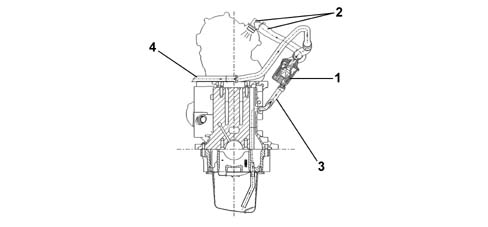
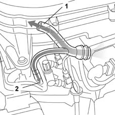
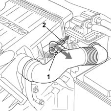

1080D crankcase vapour/gas recirculation system
- Path
- Descriptions > 10 ENGINE > 1080 EXHAUST EMISSION CONTROL SYSTEM > 1080D crankcase vapour/gas recirculation system
- Kind
- system description
- Applies to
- all engines; all production periods
- Interactive page
- https://sloeber94.github.io/elrnDB-lYpsln/en/#/2427381
Applies to: engines: 1.2 8v; all production periods; only with equipment: Euro 3
The system controls crankcase emissions of vent gases consisting of mixtures of air, fuel vapours and burnt gases that leak through the piston rings and also lubricant oil vapours by redirecting them back to the engine so they can be burnt.
Applies to: engines: 1.2 16v; all production periods; only with equipment: Euro 3
The system controls crankcase emissions of vent gases consisting of mixtures of air, fuel vapours and burnt gases that leak through the piston rings and also lubricant oil vapours by redirecting them back to the engine so they can be burnt.
Applies to: engines: 1.4 16v; all production periods
The system controls crankcase emissions of vent gases consisting of mixtures of air, fuel vapours and burnt gases that leak through the piston rings and also lubricant oil vapours by redirecting them back to the engine so they can be burnt.
Applies to: engines: 1.3 JTD; all production periods
Function
The oil vapour emissions are controlled by an oil separator (1) which collects the vapours released from the crankcase and from the tappet cover via the pipe (2). The condensed vapours pass through a pipe (3) returning to the sump, whilst the uncondensed vapours pass through a pipe (4) and are sent to the turbocharger air intake hose.

1 - Oil separator 2 - Oil vapour outlet from cover 3 - Return to the sump of condensed vapours 4 - Intake vapour pipe
Applies to: engines: 1.2 8v; all production periods; only with equipment: Euro 3
Blowby gases from the crankcase rise to the cylinder head and are conveyed to two different intakes:
- with medium-high accelerator throttle openings, the gases are taken in through the port immediately downstream from the air cleaner (1).
- with small throttle openings (particularly when the engine is idling or in over-run), gases are taken in downstream of the throttle (2).

Applies to: engines: 1.2 16v; all production periods; only with equipment: Euro 3
Blowby gases from the crankcase rise to the cylinder head and are conveyed to two different intakes:
- with medium-high accelerator throttle openings, the gases are taken in through the port immediately downstream from the air cleaner (1).
- with small throttle openings (particularly when the engine is idling or in over-run), gases are taken in downstream of the throttle (2).

Applies to: engines: 1.4 16v; all production periods
Blowby gases from the crankcase rise to the cylinder head and are conveyed to two different intakes:
- with medium-high accelerator throttle openings, the gases are taken in through the port immediately downstream from the air cleaner (1).
- with small throttle openings (particularly when the engine is idling or in over-run), gases are taken in downstream of the throttle (2).